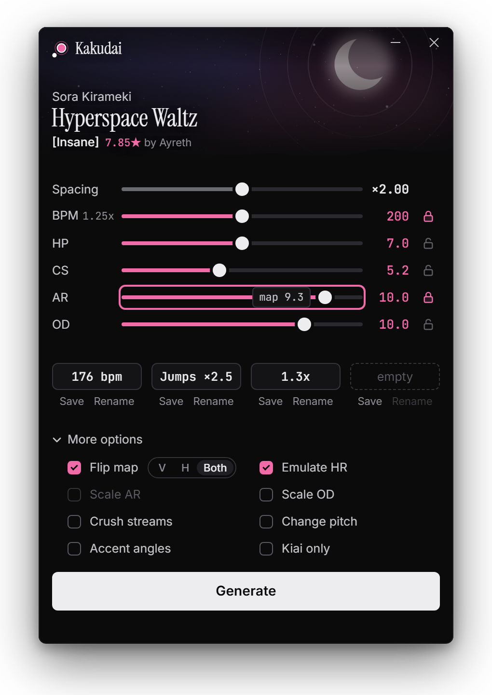
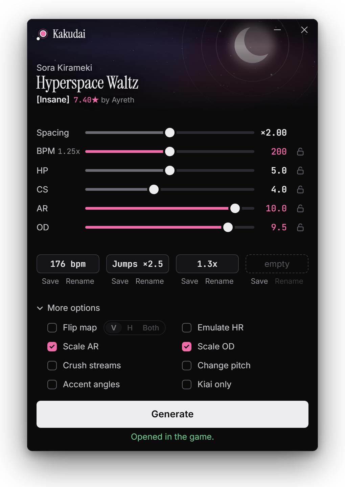

osu!lazer · Torii
Kakudai拡大
Your osu! maps, spaced out. Same rhythm, every note in the playfield.
Spacing, BPM, AR/OD, HR and flips in one click. A native Windows app.
osu!lazer · Torii
Your osu! maps, spaced out. Same rhythm, every note in the playfield.
Spacing, BPM, AR/OD, HR and flips in one click. A native Windows app.

